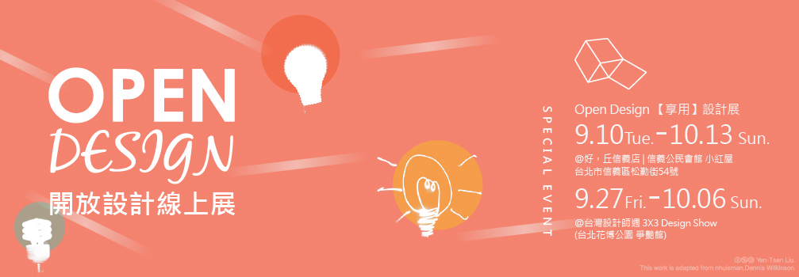

2013-09-05
最近因為策展認識一群設計師。
大家自己掏腰包 辦展；縮減睡眠時間 趕工；自動自發 做作品 想文案.....
自身工作依舊忙碌，甚至忙翻了！但 卻帶著喜悅，做這個多出來的「作業」。
我想可能當設計師真需要有些 自虐性格理想(笑)^^"...
今年的 Open Design｜[享用]設計系列展，展期愈來愈近了！
歡迎大家先至開放設計線上展一睹為快...
記得撥空蒞臨這系列設計展，來看看設計師們是如何運用開放概念來創作～
[ Open Design｜享用 ] 設計系列展
9.10 Tue. -10.13 Sun. 國內設計師開放設計創作聯展
@好丘 (信義公民會館小紅屋)
9.27 Fri. -10.06 Sun. 台灣與國際設計師的開放設計對話
@台灣設計師週 3X3 Design Show (台北花博公園 爭艷館)

---------------------------------------
除了開放設計，有沒有聽過互動設計？
這又是另一群熱血的設計師，來自台灣互動設計協會(IxDA Taiwan)[註]，幾乎都是志工，每年會辦個國際聚會，平常週末也會不定期辦些有趣的互動設計工作坊。
台灣創用CC計畫很榮幸有機會能與IxDA Taiwan合辦2013互動設計國際研討會，地點在中研院人文社會科學館，時間在深秋的週末（10/26）。
大會今年設定主軸為「社會創新」(Social Innovation)﹐邀請到國內外重量級專家學者與設計師﹐來探討「社會創新的概念對互動設計領域的可能啟示與影響、為什麼互動設計師需要關注社會創新﹐以及互動設計如何能夠幫助社會創新。」
設計就在生活之中，不再只為設計而設計，設計需要更貼近人跟社會，才更具意義與價值。歡迎大家一同來共襄盛舉！
【2013 Interaction Design Conference 議程】
日期：2013/10/26 地點：中央研究院人文社會科學館 國際會議廳
08:30-09:25 註冊報到
09:25-09:30 開幕
09:30-10:20 專題演講講者一：陳東升 教授（台灣大學社會系教授）
10:20-10:40 午茶休息時間
10:40-11:30 專題演講講者二：許毓仁 先生（TEDxTaipei 創辦人）
11:30-12:00 Q & A Session for Speaker 1 & 2
12:00-13:00 午餐
13:00-13:50 專題演講講者三：Michael Peng（IDEO Tokyo 創辦人）
13:50-14:00 休息時間
14:00-14:50 專題演講講者四：Jon Kolko（AC4D 創辦人）
14:50-15:20 Q & A Session for Speaker 3 & 4
15:20-15:40 午茶休息時間
15:40-17:40 平行工作坊（來賓擇一參加）：
(1) 通用設計達人 余虹儀 Horng-yi Yu (家倍安 CareBest Inc.)
(2) 服務設計專家 汪建均 Lex Wuang (遊石設計 UXI Design)
(3) 《美學 CEO》作者吳翰中領軍的社會創新實驗室 Social Innovation Lab
(4) 使用者經驗設計專家 蔡明哲 Richard Tsai (悠識數位 UserXper Inc.)
(5) 互動設計與創新專家 陳育民 Yves Chen (UX Designer, 丹麥哥本哈根互動設計學院 CIID Alumni)
(6) 數位體驗設計專家 Melora Zaner-Godsey (Yahoo! 亞太區設計部門資深總監)
17:40-18:00 閉幕
18:00-20:30 萬聖節派對
---
[註] IxDA (Interaction Design Association)，是一個國際性的非營利組織，始於2003年，致力於互動設計 (Interaction Design, IxD) 的專業實踐與傳播，台灣也是國際分會之一。
備註：
2013互動設計國際研討會及議程連結失效